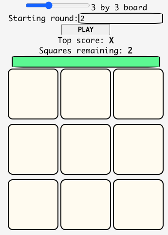

Projects
Here you’ll find some projects I’ve worked on, listed chronologically.
Some of my first projects were undertaken in college when I had barely started my degree in computer science. Therefore plenty of avoidable mistakes were made. A lot of times I simply just bit off much more than I could chew. However, none of that was important because the reason I embarked on these projects was for the learning experience.
My first game
My first project is my favorite one. Thinking about it brings back such great memories: I had just finished my first introductory computer science class, software development seemed so big/mysterious/exciting. I couldn’t wait to see what I could make! So that winter break after the semester had ended I asked myself, “can I make a video game?”.
Good times ensued:
- I discovered and learned how to use the Unity game engine.
- I dipped my toes in C#.
- I learned some basic game development concepts (such as the game loop).
- I also learned some software design patterns, namely the Singleton pattern (usually implemented by some god-like
GameManagerclass).
With these first projects it really felt like you could take over the world with code. Again, I was ignoring so many fundamental steps such as design and testing, but that also made it more fun at the time.
Why not another game
I had so much fun with my first game that I decided to try another, this time geared towards mobile.
In the game, you:
- Shoot at enemies (anything that isn’t green) by tapping on them.
- Walk to different points on the screen by tapping on the screen (this only works if the location you tapped on isn’t occupied by an enemy, otherwise you’d shoot at the enemy).
- Teleport by double tapping somewhere on the screen.
The name for the game was Pixel Trigger, which I thought was pretty darn cool (maybe not that cool). It was super fun to play, especially to have friends and family try it out.
Sadly letting other people try out the game exposed some pretty terrible bugs (what a surprise). I remember not implementing things very cleverly, but anyway, I was still a total noob at coding and I was happy to just have something I could play. Plus even if there were bugs people that tried it out still had a good time.
Looking back at this it still looks fun, I might go back and re-implement it, I’m 100% sure I’d do a much better job now.
A text editor
This is one of those projects where I really bit off more than I could chew. I hadn’t even taken my “data structures & algorithms” course but for some reason I thought I’d be capable of implementing a basic text editor.
In reality I got somewhat close:
- You could create a file, open an existing one, and save any changes.
- The lines were numbered (I know, incredible).
- You had a freaking awesome little Minimap on the right of the screen (I wanted it to look like Sublime).
- The line your caret was currently on was highlighted (notice that it’s also highlighted in the Minimap!).
- The scrolling for the editor and the Minimap (the part that shows you what section of the file you are currently viewing) was nicely synced.
- Syntax highlighting! Though it was buggy and only worked for Java and even writing about how I implemented it makes me cringe (calling
find()in a certain area of the text given a list of keywords).
This project really just makes me laugh, I had fun making it and made plenty of mistakes, though I learned some cool things along the way:
- I discovered/used threads before even knowing what they were.
- Did some object orientated programming, delegating responsibilities to specific classes.
- The Swing library.
- Thought about efficiency for the first time ever (this happened because I tried to open a large file and the syntax highlighting system I had written was not happy to find tens of thousands of lines to immediately begin parsing).
Though I abandoned the project it still served me well and was a fun experience. FYI I named the text editor Splendiferous so as to rival Sublime in a funny and totally not serious way.
A web app for dieting
I had just finished taking an upper level web development course. I thought the topics were interesting so I decided to dive deeper into web development by just making something. With this project I dove headfirst into the React and Django frameworks.
I decided to try and make an app to help people track their macronutrients (proteins, carbohydrates, fat) along with their calories and body weight.
You could do two main things with the app:
Create recipes for meals you want to track the nutrients of:
View the summary of your total macros and calories in a dashboard:
Like some of my other early projects this one was abandoned once I got the learning experience I wanted out of it.
My next projects tended to be smaller and therefore more realistic in scope.
A guitar/music theory web app
I embarked on this little project because I wanted to make something without using any frameworks.
The web app displays the fretboard of a guitar. It is meant as a tool to help guitarists memorize the location of notes on the fretboard and the shape of different scale patterns.
Link to source code.
vscode contributions
I contributed to vscode a couple of times:
These were great experiences. The only reason I don’t contribute more often is because sometimes you’ll follow good etiquette and say that you’re working on an issue but then someone else just opens a PR which depending on how long you were working on a fix, throws a lot of your time away.
A little game in React
It had been a while since I had worked with React and I wanted to brush up on it. So I started by doing the official React tic-tac-toe tutorial, here’s a screenshot of my final result:
-
I then made a little pattern-matching game of my own in React:

This website!
How could I not mention this site, I wrote a static site generator to make it and it was really fun!